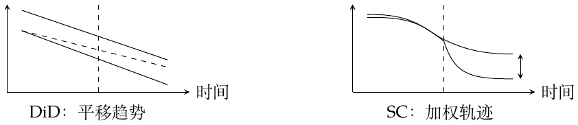
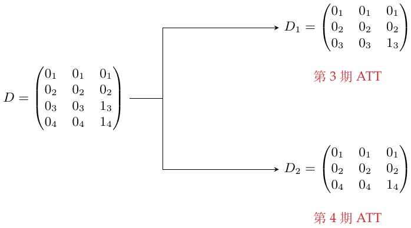
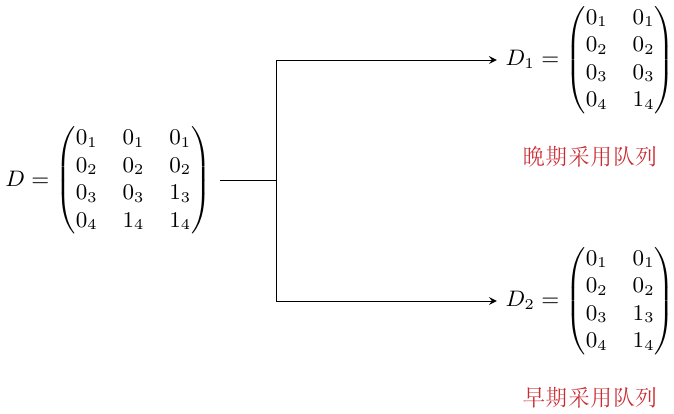

第25章：合成双重差分
面板数据的表示
在多个时期观测多个单位。在 \(D\) 中，行是时间，列是单位： \[D=\begin{pmatrix}0&0&0&\cdots&0&0\\0&0&0&\cdots&0&0\\\vdots&\vdots&\vdots&&\vdots&\vdots\\0&0&0&\cdots&1&1\\0&0&0&\cdots&1&1\end{pmatrix}.\]
采用后出现1的列 \(\textcolor{black}{\longrightarrow}\) 受处理单位
一次进入处理状态：单位一旦受处理，就不会返回未处理状态。这里的四块表示还要求受处理单位共用处理前／后的分界。这些是设计限制；因果识别仍需关于未处理结果的假设。交错采用将在后面通过子面板处理。
表示方法1：合成控制。
将观测组织为四块： \[D=\begin{pmatrix}0&0\\0&1\end{pmatrix},\qquad Y=\begin{pmatrix}Y_{\mathrm{pre,co}}&Y_{\mathrm{pre,tr}}\\Y_{\mathrm{post,co}}&Y_{\mathrm{post,tr}}\end{pmatrix}.\] pre/post表示处理前／后，co/tr表示对照／处理组。
表示方法2：DiD。
使用长表，列分别为单位、时间、结果、是否属于处理组、是否已经开始受处理。
观测到的四块与缺失的反事实为 \[Y=\begin{pmatrix}Y(0)_{\mathrm{pre,co}}&Y(0)_{\mathrm{pre,tr}}\\Y(0)_{\mathrm{post,co}}&Y(1)_{\mathrm{post,tr}}\end{pmatrix}, \qquad \operatorname{ATT}=\overline Y(1)_{\mathrm{post,tr}}-\underbrace{\overline Y(0)_{\mathrm{post,tr}}}_{\text{反事实}}.\] 横线表示对受处理单位在处理后时期的单元格求平均。
回看DiD与合成控制
DiD回归及其平行趋势限制为 \[Y_{it}=\beta_0+\beta_1\mathrm{Post}_t+\beta_2\mathrm{Treated}_i +\beta_3\mathrm{Treated}_i\mathrm{Post}_t+e_{it},\] \[E[Y(0)_{\mathrm{post,co}}-Y(0)_{\mathrm{pre,co}}] =E[Y(0)_{\mathrm{post,tr}}-Y(0)_{\mathrm{pre,tr}}].\] 若没有处理，两组的平均变化相同。
\(\widehat\tau^{\mathrm{did}}\) 是下列最小化问题中的处理系数： \[\min_{\mu,\alpha,\beta,\tau}\sum_{i=1}^N\sum_{t=1}^T [Y_{it}-(\textcolor{blue}{\mu+\alpha_i}+\beta_t+\tau D_{it})]^2.\] \[\begin{aligned} \widetilde Y_{it}&=Y_{it}-\overline Y_{i\cdot}-\overline Y_{\cdot t}+\overline Y_{\cdot\cdot},\\ \widetilde D_{it}&=D_{it}-\overline D_{i\cdot}-\overline D_{\cdot t}+\overline D_{\cdot\cdot}. \end{aligned}\]
平衡面板中对 \(Y\) 与 \(D\) 去均值 \(\textcolor{black}{\longrightarrow}\) 固定效应最小二乘目标。
这个形式与合成控制相似，但没有权重。
合成控制先用处理前结果拟合权重： \[\widehat w^{\mathrm{sc}}=\operatorname*{argmin}_{w_{\mathrm{co}}} \|\overline y_{\textcolor{blue}{\mathrm{pre,tr}}}-Y_{\mathrm{pre,co}}w_{\mathrm{co}}\|_2^2, \quad \sum_{i\in\mathrm{co}}w_i=1,\quad w_i\ge0.\] \(Y_{\mathrm{pre,co}}\) 为 \(T_{\mathrm{pre}}\times N_{\mathrm{co}}\)：行是时间，列是单位。\(w_{\mathrm{co}}\) 为 \(N_{\mathrm{co}}\times1\)。\(\overline y_{\mathrm{pre,tr}}\) 的每一项是在某个处理前时点对处理组单位求平均。 让合成对照贴合处理组，这类似线性回归。 对照单位的权重可以为零。
处理后，用加权对照预测缺失的结果，再平均处理后的差值。相应的SC回归目标也写在下面： \[\widehat Y(0)_{\mathrm{post,tr}}=Y_{\mathrm{post,co}}\widehat w^{\mathrm{sc}}_{\mathrm{co}},\qquad \widehat{\operatorname{ATT}}=\operatorname{average}_{t\in\mathrm{post}} [\overline y_{t,\mathrm{tr}}-\widehat Y(0)_{t,\mathrm{tr}}].\] \[\min_{\beta,\tau}\sum_{i=1}^N\sum_{t=1}^T [Y_{it}-(\beta_t+\tau D_{it})]^2\widehat w_i^{\mathrm{sc}}, \qquad \widehat w_i^{\mathrm{sc}}=1/N_{\mathrm{tr}}\quad(i\in\mathrm{tr}).\] 与DiD相比，这个目标没有总体截距 \(\mu\)，也没有单位固定效应 \(\alpha_i\)。 将差值解释为因果效应，需要合成比较在处理后的未处理结果上仍有效；处理前拟合接近本身并不能保证这一点。
我的图解。
第一幅图中，平移对照组趋势来构造处理组的未处理轨迹，在这个例子里放大了效果。第二幅图用前事结果生成权重，组成虚拟的“未受处理的处理组”；再用这些权重计算后事均值，以两个均值之差作估计。

将两者结合：合成DiD
\(\star\) 先并列两个组成部分： \[\begin{array}{ll} \mathrm{SC}:&\displaystyle\min_{\beta,\tau}\sum_{i,t}[Y_{it}-(\beta_t+\tau D_{it})]^2\widehat w_i^{\mathrm{sc}},\\[2mm] \mathrm{DiD}:&\displaystyle\min_{\mu,\alpha,\beta,\tau}\sum_{i,t}[Y_{it}-(\mu+\alpha_i+\beta_t+\tau D_{it})]^2. \end{array}\]
SC的权重与DiD的固定效应 \(\textcolor{black}{\longrightarrow}\) 合并，并加入时间权重。
\(\widehat\tau^{\mathrm{sdid}}\) 是以下目标中的处理系数： \[\min_{\mu,\alpha,\beta,\tau}\sum_{i=1}^N\sum_{t=1}^T [Y_{it}-(\mu+\alpha_i+\beta_t+\tau D_{it})]^2 \underbrace{\widehat w_i^{\mathrm{sdid}}}_{\textcolor{red}{\text{单位权重}}} \underbrace{\widehat\lambda_t^{\mathrm{sdid}}}_{\textcolor{red}{\text{时间权重}}}.\]
时间权重。
用对照组处理前的结果，拟合它们处理后的平均结果： \[(\widehat\lambda_0,\widehat\lambda_{\mathrm{pre}}) =\operatorname*{argmin}_{\lambda_0,\lambda_{\mathrm{pre}}} \|\overline y_{\textcolor{blue}{\mathrm{post,co}}}-(\lambda_{\mathrm{pre}}Y_{\mathrm{pre,co}}+\lambda_0\mathbf1^{\mathsf T})\|_2^2, \quad \sum_{t\in\mathrm{pre}}\lambda_t=1,\quad\lambda_t\ge0.\]
\(Y_{\mathrm{pre,co}}\)：\(T_{\mathrm{pre}}\times N_{\mathrm{co}}\)，行是时间，列是单位。
\(\overline y_{\mathrm{post,co}}\)：\(1\times N_{\mathrm{co}}\)，对每个对照单位在处理后的时期求平均。
\(\lambda_{\mathrm{pre}}\)：\(1\times T_{\mathrm{pre}}\)，每个处理前时期一个权重。
按这里的行向量写法，在矩阵上方加一行1来表示截距。拟合 \((\lambda_0,\lambda_{\mathrm{pre}})\)，预测对照组的处理后均值：

单位权重。
两种加权方向的联系：

\[\begin{aligned} (\widehat w_0,\widehat w_{\mathrm{co}}) =\operatorname*{argmin}_{w_0,w_{\mathrm{co}}}\big\{& \|\overline y_{\textcolor{blue}{\mathrm{pre,tr}}}-(Y_{\mathrm{pre,co}}w_{\mathrm{co}}+w_0\mathbf1)\|_2^2\\ &+\zeta^2T_{\mathrm{pre}}\|w_{\mathrm{co}}\|_2^2\big\},\\ \sum_{i\in\mathrm{co}}w_i&=1,\quad w_i\ge0,\\ \zeta&=(N_{\mathrm{tr}}T_{\mathrm{post}})^{1/4}\widehat\sigma(\Delta_{it}), \qquad \Delta_{it}=Y_{it}-Y_{i,t-1}. \end{aligned}\] 用对照组处理前结果的一阶差分估计 \(\widehat\sigma\)。
\(L_2\) 惩罚倾向于让非零权重分布得更广 \(\textcolor{red}{\longrightarrow}\) \(\zeta^2T_{\mathrm{pre}}\|w_{\mathrm{co}}\|_2^2\)
在预测变量矩阵中加一列1： \[X=[\,\mathbf1_{T_{\mathrm{pre}}}\ \ Y_{\mathrm{pre,co}}\,].\] 拟合 \((w_0,w_{\mathrm{co}})\)，截距不受单纯形约束，也不加惩罚。
有截距 \(\textcolor{blue}{\longrightarrow}\) \(w_0\)
与SC相比：截距能改善对处理组轨迹的贴合，\(L_2\) 惩罚则对对照权重作正则化。
受处理单位与处理后时期分别使用均匀权重 \(1/N_{\mathrm{tr}}\) 和 \(1/T_{\mathrm{post}}\)。 我的直觉：起初我把 SDID 相比 SC 的特点理解为，只关注干预近期起效果的数据。从时间权重的目标看，实际是用对照组的处理前结果去贴合处理后平均结果，因此有帮助的较早时期也可以获得权重，并不按离干预日期的远近直接分配。
时间效应异质性与交错采用
要分别估计每一期的效果，可以在不同子面板上重复运行SDID。0和1的下标标记原来的时期。
时间效应异质性。
完整矩阵对应第3、4期的平均ATT。将它拆开，就能分别估计两期：

交错采用。
现在各单位开始受处理的时期不同。先按处理后的时期拆分：

第4期有两个受处理单元格，第3期有一个，因此使用 \(2/3\) 与 \(1/3\) 的权重。每个子面板中的对照观测都须确实未受处理。
也可以按受处理队列拆分，并保留从不受处理单位作对照：

例如，加利福尼亚受处理12年，另外3个单位各受处理8年： \[\mathrm{ATT}_0\frac{12}{36} +\left(\sum_{j=1}^{3}\mathrm{ATT}_j\right)\frac13\frac{3\times8}{36}.\] 这些权重对应观测到的受处理“单位—时期”单元格平均效应。若目标人群不同，聚合权重也可能不同。
安慰剂方差估计
在例子中，SDID的误差条比SC更小：同时调整单位与时间差异，能够减少结果变异。这可以提高精度，但并不保证在所有设计中都比SC有更小的有效不确定性。只有一个受处理单位时，安慰剂推断尤其有用。
依次假设各个对照单位受到了处理，用SDID估计它们的安慰剂ATT。
安慰剂ATT估计 \(\textcolor{black}{\longrightarrow}\) 计算其方差，再构造近似置信区间。
\[\overline\tau^{\mathrm{pl}}=\frac1B\sum_{b=1}^B\widehat\tau^{(b)},\qquad \widehat V_\tau^{\mathrm{pl}}=\frac1B\sum_{b=1}^B (\widehat\tau^{(b)}-\overline\tau^{\mathrm{pl}})^2,\] \[\left[\widehat\tau^{\mathrm{sdid}}-z_{1-\alpha/2}\sqrt{\widehat V_\tau^{\mathrm{pl}}},\quad \widehat\tau^{\mathrm{sdid}}+z_{1-\alpha/2}\sqrt{\widehat V_\tau^{\mathrm{pl}}}\right].\] 其中 \(z_{1-\alpha/2}\) 是标准正态分位数。比较安慰剂效应的想法与SC相通。要让这个方差反映实际处理效应的不确定性，安慰剂单位与受处理单位的噪声特征须具有可比性。若有多个受处理单位，安慰剂分组应复制相同的组规模；普通加权回归的标准误不能替代这一步推断。